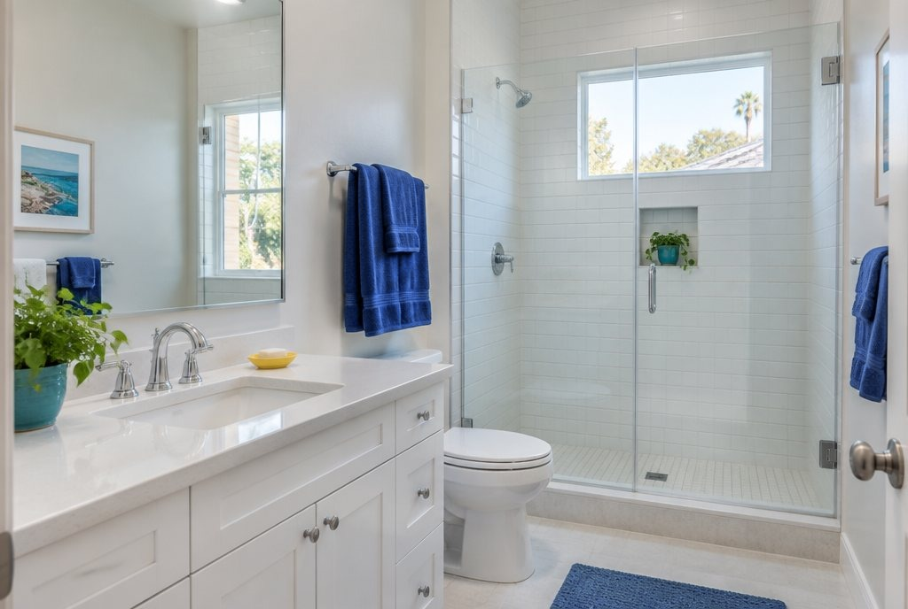

Deep clean vs. regular clean: what's the difference?
Both leave your home clean. The difference is how far each one goes. A regular clean keeps a lived-in home on track. A deep clean goes after the buildup a regular clean doesn't reach. Here's what each covers, so you book the right one.

What a regular clean covers
A regular (Standard) clean is the core list, done the same way every visit:
- Kitchen counters, sink and stovetop
- Microwave, inside and out
- Outside of fridge, oven and dishwasher
- Bathrooms: toilet, tub or shower, sink and mirrors
- Bedrooms and living areas dusted and tidied
- Floors vacuumed and mopped
- Trash taken out
What a deep clean adds
A deep clean includes everything in a Standard clean, plus:
- Baseboards
- Inside windows
- Door frames, light switches and vents
- Cabinet and drawer fronts
- Tile and grout scrubbed
When to book a deep clean
- It's your first clean with a new cleaner, or it's been a while since your last professional clean.
- You can see buildup: grimy baseboards, dusty vents, dull grout.
- Before guests, a party or a new season.
- After a busy stretch when cleaning slipped.
When a regular clean is enough
If your home is cleaned often, a regular clean keeps it there. A good pattern is one deep clean to reset everything, then regular visits to keep it that way.
What each one costs
Prices are by home size. Extras like the inside of the oven come on top.
| Home size | Standard | Deep |
|---|---|---|
| Studio / 1 bed | $140 | $230 |
| 2 bed | $185 | $315 |
| 3 bed | $235 | $405 |
| 4+ bed | $280 | $490 |
Booking regularly? Weekly visits save 15%, every 2 weeks 10%, and monthly 5%.
And a move-out clean?
Moving out goes further still: everything in a Deep clean, plus the inside of the oven, fridge and cabinets. See move-in and move-out cleaning.
Pick your clean in the app
Choose Standard or Deep, add any extras and see the price before you pay. After the clean, your Shine Report shows photos of each room.
- Book your clean and see the price before you pay.
- See who's coming before the day: first name, photo, rating and reviews.
- Follow it on the day: on the way, arrived, all done.
- Get your Shine Report: photos of each room, so you can see the difference.
The app is in testing on iPhone. Join the beta and we'll email you an invite.